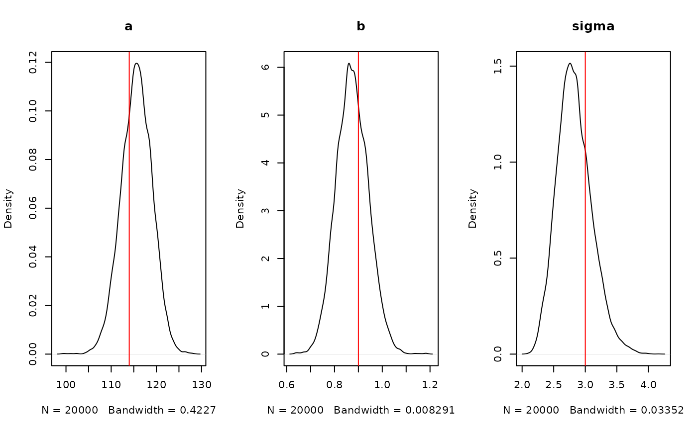

This vignette is an introduction to some of the ideas in
mcstate2. As the package is not ready for users to use it,
this is more a place for us to jot down ideas about what it will do.
We’re going to change the package name in the future (dropping the
2 at least, but possibly also changing it entirely). It’s
not yet clear to us if this will be a package that users will use or
something that the rest of our stack will target.
The basic idea
Draw samples from a model using Markov Chain Monte Carlo methods. To do this you will need:
- A model: this is an
mcstate_model()object and minimally knows about the names of its parameter vector (which is an unstructured real-valued vector) and can compute a log probability density. It may also be able to compute a gradient of this log density, or sample directly from parameter space (e.g., if it represents a prior distribution). - A sampler: this is some method of drawing samples
from the model’s distribution in a sequence. We define several different
sampler types, with the simplest one being
mcstate_sampler_random_walk(), which implements a simple Metropolis algorithm random walk. - A runner: this controls how the chains will be run (e.g., one after another or in parallel).
The system is designed to be composable; you can work in a Bayesian way by defining a model representing a likelihood and another model representing a prior and then pick a sampler based on the capabilities of the model, and pick a runner based on the capabilities your computer.
The mcstate_model() interface is designed to be very
flexible but not user-friendly. We expect to write a higher-level
interface to help work with this, and describe how to write wrappers for
models implemented in other packages (so you might write a model in dust or odin and an adaptor would make
it easy to work with the tools provided by mcstate2 to
start making inferences with your model).
An example
Before starting the example, it’s worth noting that there are far better tools out there to model this sort of thing (stan, bugs, jags, R itself - really anything). The aim of this section is to derive a simple model that may feel familiar. The strength of the package is when performing inference with custom models that can’t be expressed in these high level interfaces.
head(data)
#> height weight
#> 1 162.5401 45.92805
#> 2 159.9566 51.19368
#> 3 156.1808 44.56841
#> 4 168.4164 60.36933
#> 5 158.6978 52.14180
#> 6 154.7666 44.66696
plot(height ~ weight, data)A simple likelihood, following the model formulation in “Statistical Rethinking” chapter 3; height is modelled as normally distributed departures from a linear relationship with weight.
likelihood <- mcstate_model(
list(
parameters = c("a", "b", "sigma"),
density = function(x) {
a <- x[[1]]
b <- x[[2]]
sigma <- x[[3]]
mu <- a + b * data$weight
sum(dnorm(data$height, mu, sigma, log = TRUE))
}))The prior we’ll make much nicer to work with in the future, but here
we construct the density by hand as a sum of normally distributed priors
on a and b, and a weak uniform prior on
sigma. We provide a direct_sample function
here so that we can draw samples from the prior distribution
directly.
prior <- local({
a_mu <- 178
a_sd <- 100
b_mu <- 0
b_sd <- 10
sigma_min <- 0
sigma_max <- 50
mcstate_model(
list(
parameters = c("a", "b", "sigma"),
density = function(x) {
a <- x[[1]]
b <- x[[2]]
sigma <- x[[3]]
dnorm(a, a_mu, a_sd, log = TRUE) +
dnorm(b, b_mu, b_sd, log = TRUE) +
dunif(sigma, sigma_min, sigma_max, log = TRUE)
},
direct_sample = function(rng) {
c(rng$normal(1, a_mu, a_sd),
rng$normal(1, b_mu, b_sd),
rng$uniform(1, sigma_min, sigma_max))
},
domain = rbind(c(-Inf, Inf), c(-Inf, Inf), c(0, Inf))
))
})The posterior distribution is the combination of these two models
(indicated with a + because we’re adding on a log-scale, or
because we are using prior and
posterior; you can use mcstate_model_combine()
if you prefer).
posterior <- likelihood + priorConstructing a sensible initial variance-covariance matrix is a bit of a trick, and using an adaptive sampler reduces the pain here. These values are chosen to be reasonable starting points.
vcv <- rbind(c(4.5, -0.088, 0.076),
c(-0.088, 0.0018, -0.0015),
c(0.076, -0.0015, 0.0640))
sampler <- mcstate_sampler_random_walk(vcv = vcv)Now run the sampler. We’ve started from a good starting point to make this simple sampler converge quickly:
samples <- mcstate_sample(posterior, sampler, 5000, initial = c(114, 0.9, 3),
n_chains = 4)We don’t yet have tools for working with the samples objects, but we can see the density over time easily enough:
matplot(t(samples$density), type = "l", lty = 1,
xlab = "log posterior density", ylab = "sample", col = "#00000055")And plots of our estimated parameters:
par(mfrow = c(1, 3))
plot(density(samples$pars["a", , ]), main = "a")
abline(v = 114, col = "red")
plot(density(samples$pars["b", , ]), main = "b")
abline(v = 0.9, col = "red")
plot(density(samples$pars["sigma", , ]), main = "sigma")
abline(v = 3, col = "red")